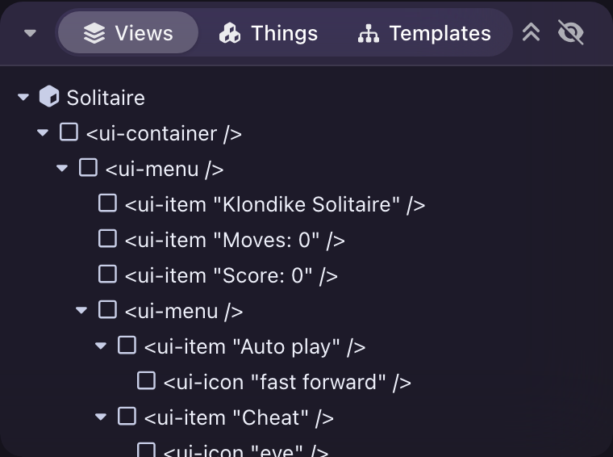
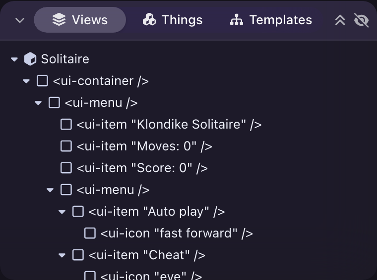
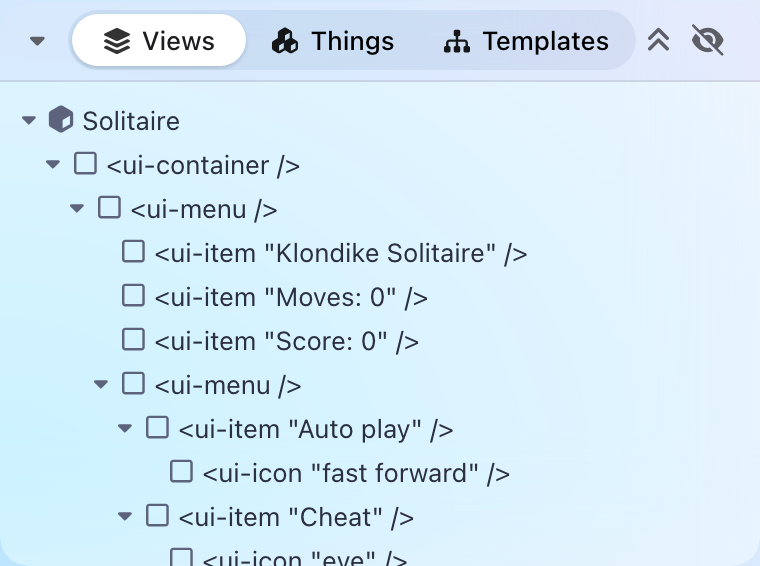
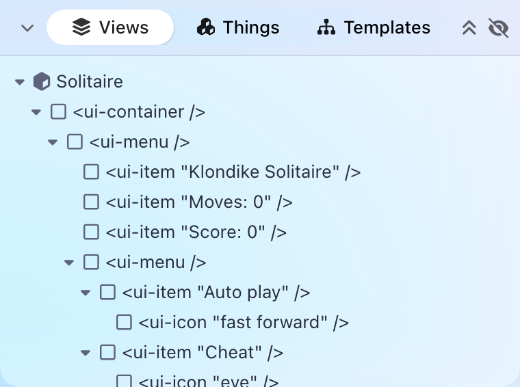
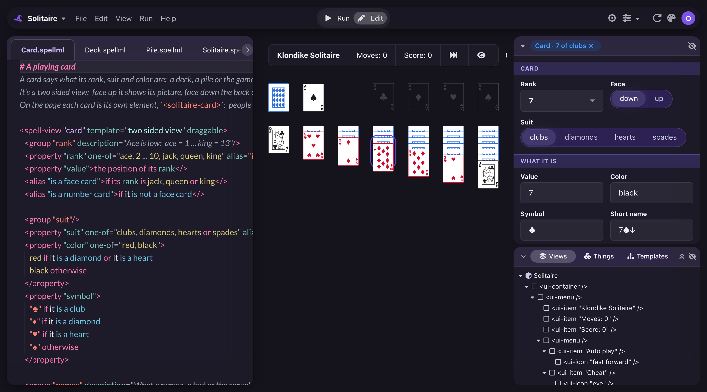

The header look
Is this one bar the look to take to every header in the editor? It's built on the Views card only, so far.
editor -- polishing the editor for a public preview on the web.The Views card's header was three things side by side: a caret, a capsule holding the tabs, and loose icons. Now it's one bar.
- The bar is the track. The inner capsule is gone, and only the chosen tab's raised pill remains.
- One line. The chevron, tab icons, tab text and action icons all sit within half a pixel of one centre line.
- Closed, the bar is left. It still shows which view is chosen, and choosing a tab opens the card.
- The actions reach the far edge, lined up with the properties card's eye above.
- Narrow, the tabs become one dropdown, "Views ▾", at 300px and under (measured at 300, 230 and 170).
It's made of plain widgets, and the editor's own tuning for this card is deleted:
- a
<ui-panel appearance="pane">: one flat bar over the rest of the box - a
<ui-toolbar appearance="segmented link header">in its bar
Later headers would use the same two, folding or not.
Closed, before and after:
| Before | After | |
|---|---|---|
| Glass dark | ||
| Glass light | ||
| Fruity dark | ||
| Fruity light |
Open, before and after:
| Before | After | |
|---|---|---|
| Glass dark |
 |
 |
| Fruity light |
 |
 |
In the editor, Glass dark:

What you'll notice is unfinished:
- The properties card above still has its old filled caret, where this one has the panel's thin chevron. They match once that card moves over.
- The file tabs still look as they did.
Should every header in the editor take this one-bar look, the file tabs included?
The file tabs become pills, and the properties card, the Program panel and Run | Edit move to this bar. Their one-off CSS goes.
The same, with what you write in the comment box here changed first.
Nothing else moves, and I bring you another look. Say what's wrong: for instance, keep the inner track, as in the Before pictures.